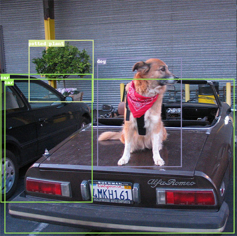

目标检测任务
我们通过对目标检测任务进行调研，并总结数据集描述中的字段信息，从而制定出目标检测任务DSDL模板，供大家参考使用。
1. 任务调研
1.1 任务定义
目标检测任务是指给定一张输入图像，判别图像中目标位置（通常用边界框表示）和语义类别，示意图如下： ：

1.2 评价指标：
目标检测最常用的评价指标就是AP（Average Precision），此外还有一些基于AP衍生的指标，这些指标的含义如下：
- AP
PR曲线中和横坐标轴围成区域的面积。
- 11-point interpolation
为了简化AP计算，有时候采用11-point计算方法（如PASCAL VOC数据集的metric），相当于计算recall=[0, 0.1, 0.2, ... , 1]这11个点处precision值的平均值（某处不存在的话取右侧最大值），计算公式如下：
- mAP
所有的类别的AP求平均
- mAP@0.5 和 mAP@0.5~0.95
这里的0.5和0.95都是前文介绍混淆矩阵提到的阈值，也就是在不同阈值下进行的AP计算。mAP@0.5也就是阈值等于0.5的时候所计算的mAP，mAP@0.5~0.95则表示阈值从0.5到0.95分别计算mAP，然后在求平均。PASCAL VOC数据集中采用的是mAP@0.5，通常也叫AP_50, coco数据集中采用的是mAP@0.5~0.95，通常简称为mAP。（相同的检测器，mAP一般低于AP_50）
- mAP_s，mAP_m，mAP_l
这里的s、m、l代表的是物体尺寸，是COCO的metric会把box分为不同尺寸，来查看模型对不同尺寸box的检测效果。
1.3 主流数据集调研：
我们对10个目标检测数据集进行调研，对相关数据集描述文件（主要是标注字段）进行分析汇总，相同含义的标注字段会以统一命名进行展示，汇总信息如下表所示：
| 目标检测数据集 | 共享字段 | 独立字段 | ||||||||||
|---|---|---|---|---|---|---|---|---|---|---|---|---|
| image_id | label_id | bbox | iscrowd | istruncated | isdifficult | isoccluded | isdepiction | isreflected | isinside | confidence | pose | |
| PASCAL VOC | Y | Y | Y | Y | Y | Y | Y | |||||
| COCO | Y | Y | Y | Y | ||||||||
| KITTI | Y | Y | Y | Y | Y | Y | ||||||
| OpenImages | Y | Y | Y | Y | Y | Y | Y | Y | Y | |||
| Objects365 | Y | Y | Y | Y | Y | Y | ||||||
| ILSVRC2015 | Y | Y | Y | Y | Y | |||||||
| LVIS | Y | Y | Y | |||||||||
对共享字段和独立字段进行汇总，得到下表：
| 字段类型 | 字段名称 | 含义 |
|---|---|---|
| 共享字段 | image_id | 定位到唯一图片，比如用图片名或者图片路径表示 |
| label_id | 单个目标所属的类别 | |
| bbox | 定位单个目标的矩形框，比如用[xmin, ymin, xmax, ymax]表示 | |
| 独立字段 | iscrowd | 是否为一群密集目标，比如人群，一堆苹果 |
| istruncated | 目标是否被截断，即目标部分处于图片之外 | |
| isdifficult | 是否为检测困难的目标 | |
| isoccluded | 目标是否被遮挡 | |
| isdepiction | 是否为卡通形象、绘画等等，非实际个体 | |
| isreflected | 是否为镜面目标 | |
| isinside | 是否在别的物体内部，比如一辆车在建筑内部，人在车内部等等 | |
| confidence | 检测框的置信度，为人工标注时通常为1，为自动生成时一般在0.5~1之间 | |
| pose | 拍摄角度，取值为 Unspecified，Frontal，Rear，Left，Right |
可以看到，如果要描述一个检测数据集的样本，image_id、label_id和bbox是最基础的字段，此外还包含了各种描述边界框信息的特殊字段。
2. 模板展示
根据上述调研，目标检测任务中一张图像对应不定数量的目标，每个目标用边界框BBox来定位目标位置，每个BBox同时提供语义标签，由此我们定义目标检测模板如下：
object-detection.yaml
$dsdl-version: "0.5.0"
LocalObjectEntry:
$def: struct
$params: ['cdom']
$fields:
bbox: BBox
label: Label[dom=$cdom]
ObjectDetectionSample:
$def: struct
$params: ['cdom']
$fields:
image: Image
objects: List[LocalObjectEntry[cdom=$cdom]]
- $dsdl-version: 描述了该文件对应的dsdl版本
-
LocalObjectEntry: 定义了边界框的描述方式的嵌套结构体，包含四个字段:
- $def: struct, 表示这是一个结构体类型
- $params: 定义了形参，在这里即class domain
-
$fields: 结构体类所包含的属性，具体包括:
- bbox 边界框的位置
- label 边界框的类别
-
ObjectDetectionSample: 定义了检测任务sample的结构体，包含四个字段:
- $def: struct, 表示这是一个结构体类型
- $params: 定义了形参，在这里即class domain
-
$fields: 结构体类所包含的属性，具体包括:
- image 图片的路径
- objects 标注信息，检测任务中，为前面的LocalObjectEntry构成的一个列表
3. 完整示例
我们以PASCAL VOC数据集为例，展示目标检测数据集DSDL描述文件具体内容。
3.1 DSDL语法描述类别信息
voc-class-dom.yaml
$dsdl-version: "0.5.0"
VOCClassDom:
$def: class_domain
classes:
- horse
- person
- bottle
- tvmonitor
- chair
- diningtable
- pottedplant
- aeroplane
- car
- train
- dog
- bicycle
- boat
- cat
- sofa
- bird
- sheep
- motorbike
- bus
- cow
上面的文件中给出了VOCClassDom的定义，具体包含下列字段：
- $def: 描述了VOCClassDom的dsdl类型，这里即class_domain
- classes: 描述了该类别域中所包含的类别及其顺序，在PASCAL VOC数据集中，则依次为horse、person等等
3.2 数据集yaml文件定义
train.yaml
$dsdl-version: "0.5.0"
$import:
- object-detection
- voc-class-domain
meta:
dataset_name: "PASCAL VOC2007"
sub_dataset_name: "train"
data:
sample-type: ObjectDetectionSample[cdom=VOCClassDom]
sample-path: $local
samples:
- image: "media/000000000000.jpg"
objects:
- {bbox: [4.0, 36.0, 496.0, 298.0], label: 12}
- image: "media/000000000002.jpg"
objects:
- {bbox: [440.0, 161.0, 60.0, 81.0], label: 14}
- {bbox: [97.0, 159.0, 121.0, 67.0], label: 14}
- {bbox: [443.0, 116.0, 57.0, 101.0], label: 15}
- {bbox: [104.0, 113.0, 65.0, 106.0], label: 15}
...
- $dsdl-version: dsdl版本信息
- $import: 模板导入信息，这里导入检测任务模板和VOC的class domain，也就是2. 模板展示中展示的两部分内容
- meta: 主要展示数据集的一些元信息，比如数据集名称，创建者等等，用户可以自己添加想要备注的其它信息
-
data: data的内容就是按照前面定义好的结构所保存的样本信息，具体如下：
- sample-type: 数据的类型定义，在这里用的是从检测任务模板中导入的ObjectDetectionSample类，同时指定了采用的cdom为VOCClassDom
- sample-path: samples的存放路径，如果实际是一个路径，则samples的内容从该文件读取，如果是$local（这个例子），则从本文件的data.samples字段中直接读取
- samples: 保存数据集的样本信息，注意只有在sample-path是$local的时候该字段才会生效，否则samples会优先从sample-path中的路径去读取
提示：若当前数据集图像数目较多，将所有标注信息存储在yaml文件里会导致后续数据加载速度过慢。此时用户可以通过提供外部文件，例如train.yaml中的sample-path: train.json 将数据存放到可高效读取的文件中